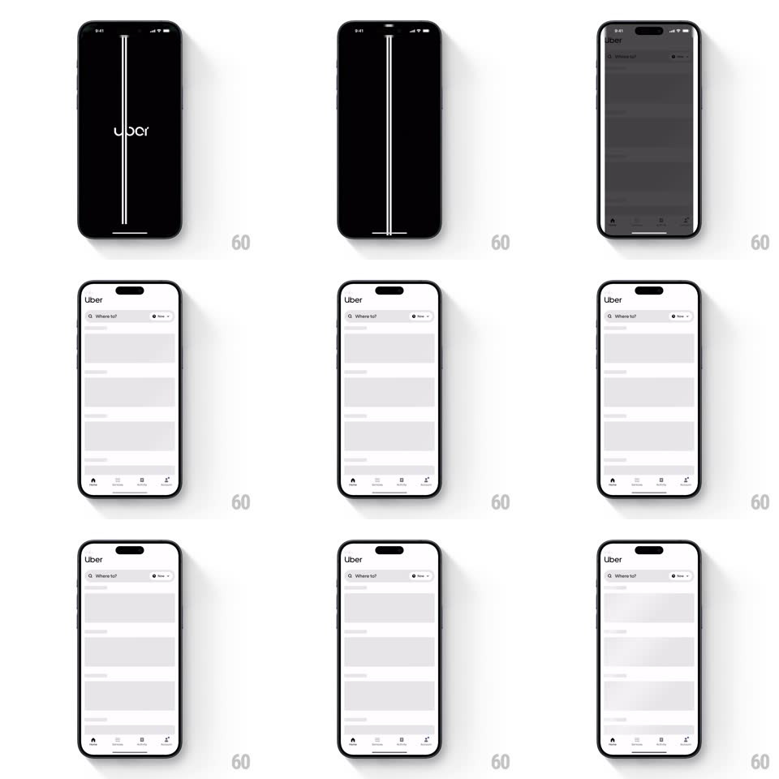

Media
Frame-by-frame

Rebuild this interaction 1:1: Uber's splash - the wordmark holds on black, then a vertical white road line draws down center-screen and splits open, expanding horizontally to reveal the white home UI.

Rebuild this interaction 1:1: Uber's splash - the wordmark holds on black, then a vertical white road line draws down center-screen and splits open, expanding horizontally to reveal the white home UI. ## Integration Integration: stack-agnostic spec - springs given as stiffness/damping, timed motions as duration + curve; map every value to your framework and animation library of choice. ## Scene A black splash with the white "Uber" wordmark. A thin white vertical line (a stylized road with a center dash) draws from top to bottom, then the road's two edges split apart left and right, widening a white corridor that becomes the home screen: "Uber" header, "Where to?" search bar, skeleton suggestion cards, and the tab bar. ## Motion spec Pattern: road-split reveal. - The wordmark holds 600ms, then fades slightly (to 70%) as the road line draws down (stroke reveal, 350ms, ease-in). - The split: the road's edges part horizontally (cubic-bezier(0.7,0,0.2,1), 550ms), each edge carrying a slice of white that stretches into the full background - the black peels away to the sides like opening doors. - Inside the widening corridor the home UI fades in (300ms, starting 200ms into the split): search bar first, then skeleton cards staggering downward (60ms apart, fade + translateY 8px). - The wordmark crossfades into the small "Uber" header text - same position band, so the logo never jumps. - The tab bar slides up last (translateY 100% to 0, 250ms) as the split completes; skeleton cards shimmer (a light sweep, 1.2s loop) until content loads. ## Calibration - Strictly black and white until the home UI arrives - no gray in the transition itself. - The road line is 2 strokes (edges) + center dashes; the dashes scroll subtly while the line draws (road-moving feel). ## Reduced motion Simple crossfade from splash to home. ## Don't miss - The reveal is centered and symmetrical - both halves open together at the same rate. - The corridor's leading edges are hard vertical lines; no curves, no wipes.